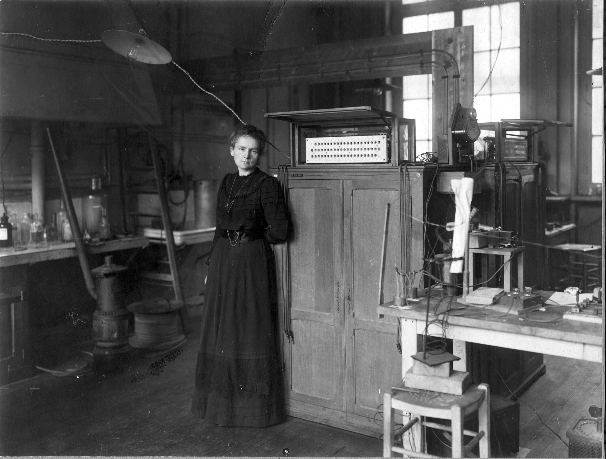
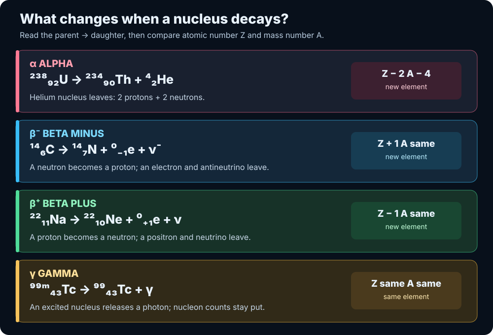
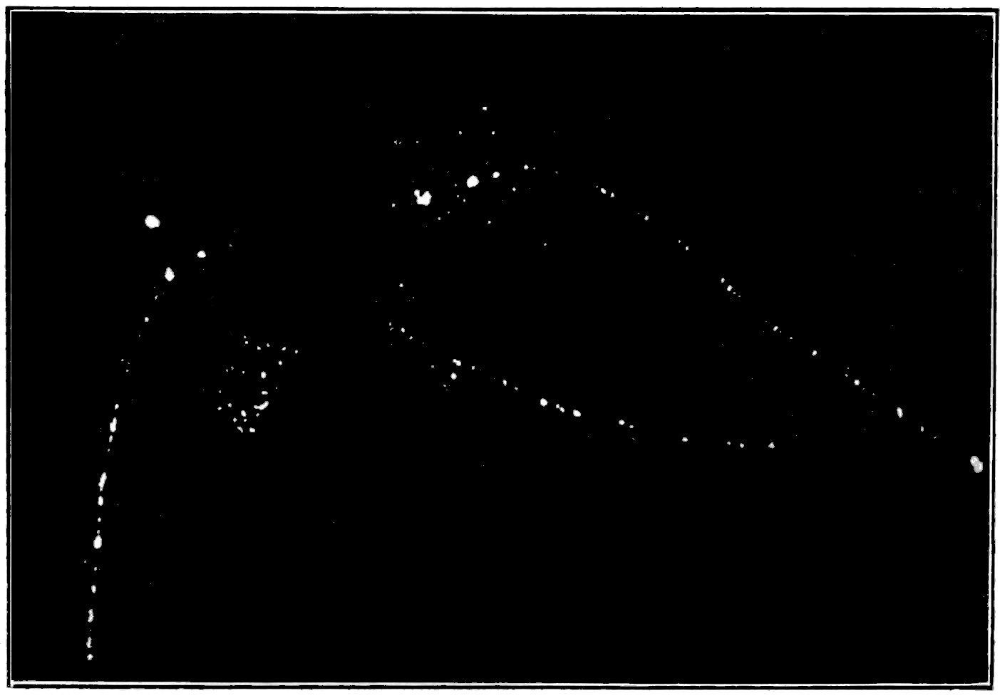
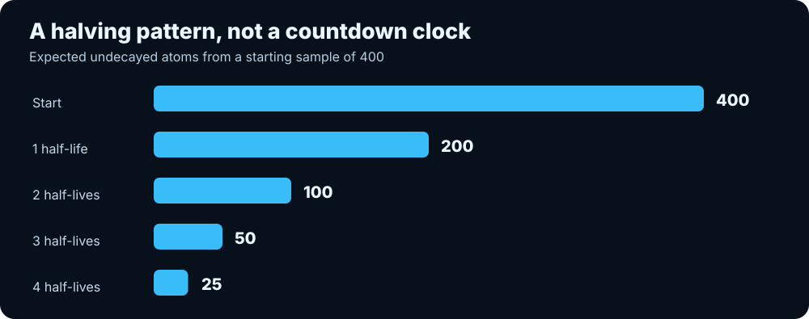
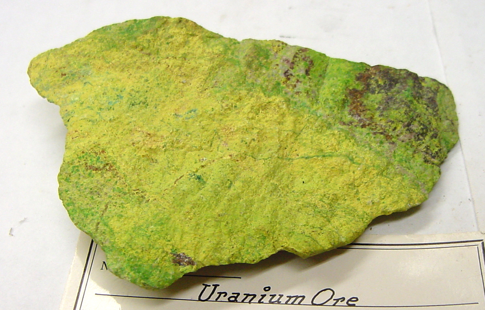
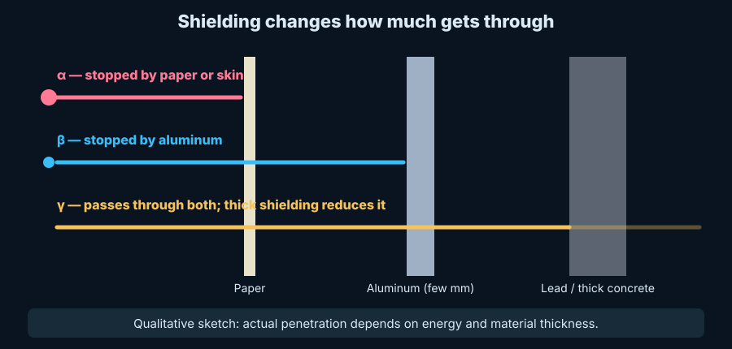
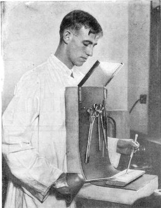

Chemistry · Nuclear Chemistry · Level 3–4
Gr. 8–12Radioactive Decay
The periodic table says an element is defined by its protons. Radioactive decay is the exception that proves how deep that rule goes: when a nucleus changes its proton count, it becomes a different element. Alpha and beta decay can change the element; gamma emission changes the nucleus’s energy. Use proton and nucleon counts to predict what each process produces.
Prerequisite: Periodic Table of Elements (atomic number, isotopes) and Atoms: Structure, Motion & Matter. Historical story: Marie Curie.
1 · The problem
Why would a nucleus fall apart?
Inside a nucleus, protons repel each other with the electric force, while the strong nuclear force glues every proton and neutron to its close neighbors. Neutrons add glue without adding repulsion, so many light stable nuclides have similar numbers of neutrons and protons. Heavier nuclei need more neutrons than protons to stay together, because electric repulsion reaches across the whole nucleus while the strong force only reaches nearby.
Plot every nuclide with neutrons on one axis and protons on the other and the stable ones form a narrow band — the line of stability. A nuclide far from that stable band may be radioactive. Every nuclide with more than 82 protons is radioactive, though many lighter nuclides are radioactive too. An individual nucleus transforms at an unpredictable moment, while a large population follows an exact statistical law.

Same element, different isotope. Carbon-12 and carbon-14 both have 6 protons (so both are carbon on the periodic table), but C-14 has 8 neutrons, which puts it off the line of stability. That is why C-14 is radioactive and C-12 is not.
How nuclear chemistry unfolded
- Henri Becquerel discovers that uranium salts darken wrapped photographic plates without sunlight.
- Marie and Pierre Curie coin the term “radioactivity” and isolate polonium and radium from pitchblende ore.
- Ernest Rutherford and Paul Villard distinguish alpha, beta, and gamma rays by magnetic deflection and penetrating power.
- Frederick Soddy explains that radioactive decay shifts elements across the periodic table and defines isotopes.
- James Chadwick discovers the neutron, explaining why isotopes differ in mass without changing atomic number.
- Willard Libby demonstrates carbon-14 dating for organic archaeological specimens.
- Brookhaven researchers develop the technetium-99m generator, now the workhorse of medical gamma imaging.
2 · The three radiations
Alpha, beta and gamma
Alpha (α)
The nucleus ejects a helium-4 nucleus: 2 protons and 2 neutrons. Common in heavy nuclei that are simply too big.
Z − 2, A − 4
Atomic number drops by 2.
Beta (β⁻ / β⁺)
β⁻: a neutron turns into a proton and emits an electron (plus an antineutrino). Too many neutrons. β⁺: a proton turns into a neutron and emits a positron (plus a neutrino). Too many protons. This is the weak force at work.
β⁻: Z + 1, A sameβ⁺: Z − 1, A same
Gamma (γ)
A high-energy photon, released when a nucleus drops from an excited state (marked with * or m) to a lower one. It usually follows an alpha or beta decay.
Z same, A same
The atom does not move on the table.


Two bookkeeping rules make every decay equation checkable: the mass numbers (A) on both sides add up, and the atomic numbers (Z) add up (an electron counts as −1, a positron as +1).
3 · Simulation 1
Decay Lab: nucleus chamber & nuclide chart
4 · Simulation 2
Half-life: chance in each atom, law in the crowd
No one can say when one particular atom will decay — each has the same probability in every moment. In a large sample, about half remain after one half-life, then about half of those after the next. Smaller samples vary noticeably from trial to trial, while larger samples hug the smooth exponential curve.
Click any symbol above to inspect it. Equivalent half-life form: N(t) = N₀ · (½)t / t½, where the decay constant is λ = ln(2) / t½ ≈ 0.693 / t½ — built on Euler's number e.

Use it: radiocarbon dating bench
Living organisms exchange carbon with their environment. After death, that exchange stops and C-14 (half-life 5,730 years) decays by β⁻ into nitrogen-14. Pick an archaeological specimen or drag the slider to compare remaining ¹⁴C against decayed ¹⁴N.
After about 10 half-lives (~57,000 years) less than 0.1% is left, which is why radiocarbon dating doesn't work on dinosaur bones — other isotope clocks with far longer half-lives, like uranium-238 (4.47 billion years), are used for those. See it applied in The Pleistocene Epoch.
5 · Simulation 3
Decay chains: heavy nuclei walk down to lead
The daughter of a decay is often radioactive too, so an atom keeps stepping until it reaches a stable isotope of lead. On the chart, alpha moves down-left (two fewer protons and two fewer neutrons) while beta-minus moves up-left (one more proton and one fewer neutron).

Notice that every natural chain passes through an isotope of radon (Z = 86). Because radon is a chemically inert noble gas, it can seep out of rock and soil into basements — the reason radon testing exists, and why the periodic table flags radon with a health warning.
6 · Safety & Simulation 4
Penetrating power, shielding & distance


| Radiation | What it is | Stopped by | Main hazard |
|---|---|---|---|
| α | Helium-4 nucleus | Paper, outer dead skin | Inhaled or swallowed source (e.g. radon, polonium-210) |
| β | Electron / positron | A few mm of aluminum or acrylic | Skin burns, internal exposure |
| γ | High-energy photon | Thick lead or concrete (reduces exponentially) | Whole-body penetrating exposure from outside |
The three radiation protections are time (less exposure), distance (intensity drops as 1/d² from a small source in open space), and shielding. Used carefully, nuclear isotopes save lives: PET scans use β⁺ emitters such as fluorine-18, and technetium-99m emits diagnostic gamma rays with a 6-hour half-life so patient exposure clears quickly.
7 · Check yourself
Nuclear equation drill & concept checks
Concept checks
1. Radium-226 (Z = 88) emits an alpha particle. What are the daughter's Z and A?
2. Carbon-14 undergoes β⁻ decay. Why does the element change to nitrogen while the mass number stays 14?
3. A sample has a half-life of 3 days. What fraction remains after 9 days?
4. Does gamma decay change which element an atom is?
5. The simulator shows 187 of 400 atoms after one half-life. What does that show?
Connections